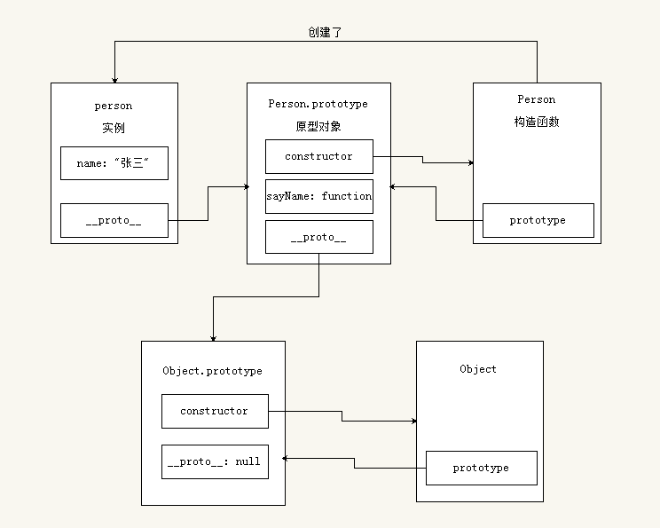

昨天学习了js的原型对象相关知识，今天继续深入理解下原型链
摘抄自 https://segmentfault.com/a/1190000011095622?_ea=2518761
原型链是什么
每一个实例都有一个
[[Prototype]]属性，指向原型对象。这是一个隐式属性，存在但是我们的脚本访问不到，不过浏览器厂商大部分都支持一个__proto__属性，用来显示指向原型，虽然能用，但__proto__不是ECMA中的规范。
原型的值可以是一个对象，也可以是
null。如果它的值是一个对象，那么这个对象也一定有自己的原型。这样就形成了一条线性的链，我们称之为原型链
简单的来说，对象寻找一个属性时会沿着原型链向上寻找，直到原型链的顶端。如果中途找到 被需要的属性 就会停止向上搜索
例：
看关系图
以上是实例、构造函数和原型对象三者的关系图
PS: prototype只是构造函数上的一个属性，它是一个指针，指向原型对象，并不表示Person.prototype就是原型对象。这里将Person.prototype认为是原型对象，是为了方便理解，需要注意哦。
注意点一
原型对象也是对象，是对象就有
__proto__属性，指向它的原型对象。
在上一个例子中，Person.prototype就是一个对象，这个对象可以说是原生Object构造函数的实例，所以
Object.prototype也是一个对象，所以它也有__proto__属性，不过它的__proto__指向null，也就是原型链的顶端，再往上就没有了
新关系图

注意点二
任何函数都可以说是原生
Function构造函数的实例
所以Person构造函数是Function构造函数的实例
继续完善关系图
可能有人疑惑，Person不是函数吗，函数怎么也有
__proto__，函数不是只有prototype吗？
因为函数本质也是对象啊，在JS的世界里，大多数事物都是对象，所以函数有__proto__没毛病。
注意点三
Function.prototype也是对象，所以和Person.prototype一样，Function.prototype可以说是原生Object构造函数的实例，所以
补充
注意点四
Function和Object都是构造函数，根据第二点任何函数都可以说是原生Function构造函数的实例，那么
恩，就是这么神奇，Function是Function的实例。。。
以上就是原型链的关系图，将这个图弄懂，原型对象的知识基本就掌握了。